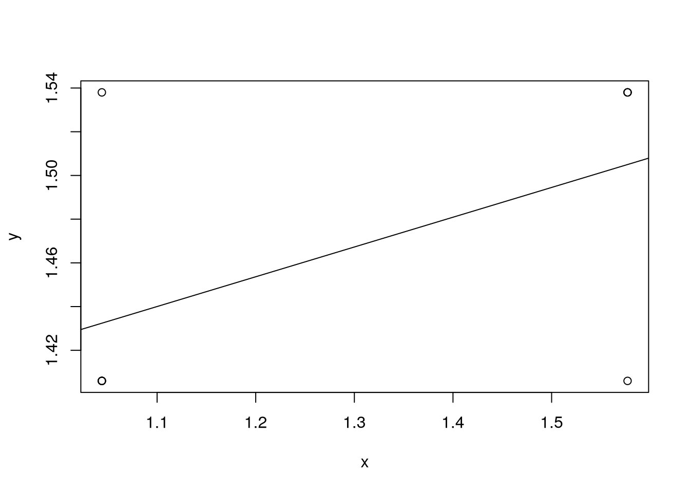
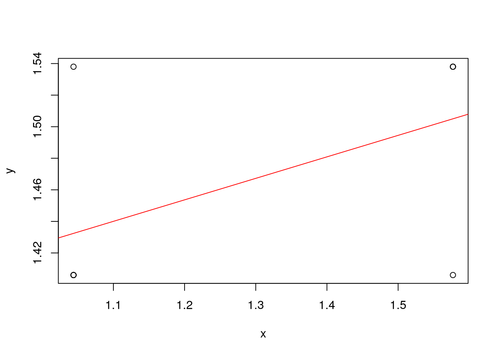
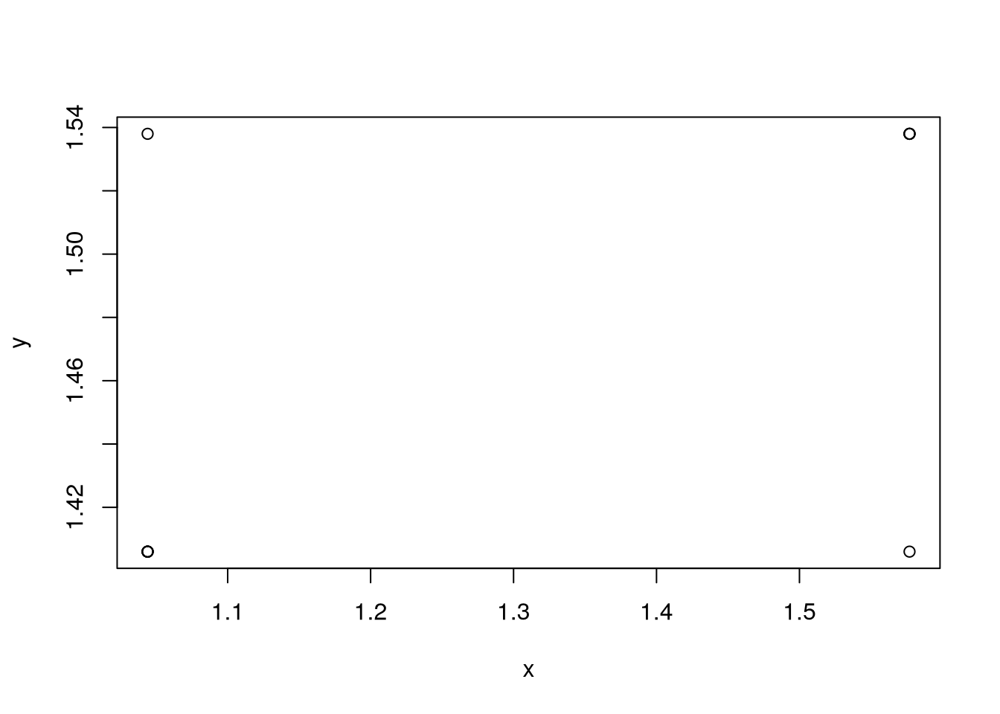

x <- c(1.577, 1.044, 1.577, 1.044, 1.577, 1.044, 1.577, 1.044, 1.044) # + rnorm(10, 0, 0.0001)
y <- c(1.538, 1.406, 1.538, 1.406, 1.538, 1.406, 1.406, 1.538, 1.406) #+ rnorm(10, 0, 0.0001)Лабораторная работа №1. Обработка экспериментальных данных методом наименьших квадратов
Вычислительная математика
Лабораторная работа №1. Обработка экспериментальных данных методом наименьших квадратов Выполнил: Набойщиков А. А.
группа ИДБ-22-15
Вариант 1
Данные
Для линейной апроксимирующей функции
f1 <- lm(y~x)
plot(x, y)
abline(f1)
summary(f1)
Call:
lm(formula = y ~ x)
Residuals:
Min 1Q Median 3Q Max
-0.0990 -0.0264 -0.0264 0.0330 0.1056
Coefficients:
Estimate Std. Error t value Pr(>|t|)
(Intercept) 1.29020 0.10225 12.618 4.54e-06 ***
x 0.13621 0.07818 1.742 0.125
---
Signif. codes: 0 '***' 0.001 '**' 0.01 '*' 0.05 '.' 0.1 ' ' 1
Residual standard error: 0.06211 on 7 degrees of freedom
Multiple R-squared: 0.3025, Adjusted R-squared: 0.2029
F-statistic: 3.036 on 1 and 7 DF, p-value: 0.125coef(f1)(Intercept) x
1.2901966 0.1362101 Моё решение
k11 <- sum(x^2)
k12 <- sum(x)
b1 <- sum(x * y)
k21 <- sum(x)
k22 <- length(x)
b2 <- sum(y)
m1 <- matrix(c(k11, k12,
k21, k22), ncol=2, byrow=T)
det_m1 <- det(m1)
m1_a = matrix(c(b1, k12,
b2, k22), ncol=2, byrow=T)
m1_b = matrix(c(k11, b1,
k21, b2), ncol=2, byrow=T)
det_a = det(m1_a)
det_b = det(m1_b)
a = det_a/det_m1
b = det_b/det_m1
a_accurate <- coef(f1)[2]
b_accurate <- coef(f1)[1]
a_abs_err <- abs(a_accurate - a)
b_abs_err <- abs(b_accurate - b)
a_rel_err <- a_abs_err / abs(a_accurate)
b_rel_err <- b_abs_err / abs(b_accurate)
\[
\Delta a = 5.8286709\times 10^{-16} \quad
\delta a = 4.2791757\times 10^{-15}
\]
\[ \Delta b = 5.1070259\times 10^{-15} \quad \delta b = 3.9583315\times 10^{-15} \]

Для квадратичной апроксимирующей функции
f2 <- lm(y~x + I(x^2))
xi <- seq(1, 2, 0.01)
yi <- predict(f2, data.frame(x=xi))Warning in predict.lm(f2, data.frame(x = xi)): prediction from rank-deficient
fit; attr(*, "non-estim") has doubtful casesplot(x, y)
lines(xi,yi)summary(f2)
Call:
lm(formula = y ~ x + I(x^2))
Residuals:
Min 1Q Median 3Q Max
-0.0990 -0.0264 -0.0264 0.0330 0.1056
Coefficients: (1 not defined because of singularities)
Estimate Std. Error t value Pr(>|t|)
(Intercept) 1.29020 0.10225 12.618 4.54e-06 ***
x 0.13621 0.07818 1.742 0.125
I(x^2) NA NA NA NA
---
Signif. codes: 0 '***' 0.001 '**' 0.01 '*' 0.05 '.' 0.1 ' ' 1
Residual standard error: 0.06211 on 7 degrees of freedom
Multiple R-squared: 0.3025, Adjusted R-squared: 0.2029
F-statistic: 3.036 on 1 and 7 DF, p-value: 0.125coef(f2)(Intercept) x I(x^2)
1.2901966 0.1362101 NA k11 <- sum(x^2)
k12 <- sum(x)
k13 <- length(x)
b1 <- sum(y)
k21 <- sum(x^3)
k22 <- sum(x^2)
k23 <- sum(x)
b2 <- sum(x*y)
k31 <- sum(x^4)
k32 <- sum(x^3)
k33 <- sum(x^2)
b3 <- sum(x^2 * y)
m2 <- matrix(c(k11, k12, k13,
k21, k22, k23,
k31, k32, k33), ncol=3, nrow=3, byrow=T)
m2_a0 <- matrix(c(b1, k12, k13,
b2, k22, k23,
b3, k32, k33), ncol=3, nrow=3, byrow=T)
m2_a1 <- matrix(c(k11, b1, k13,
k21, b2, k23,
k31, b3, k33), ncol=3, nrow=3, byrow=T)
m2_a2 <- matrix(c(k11, k12, b1,
k21, k22, b2,
k31, k32, b3), ncol=3, nrow=3, byrow=T)
det_m2 <- det(m2)
det_a0 <- det(m2_a0)
det_a1 <- det(m2_a1)
det_a2 <- det(m2_a2)
a0 <- det_a0 / det_m2
a1 <- det_a1 / det_m2
a2 <- det_a2 / det_m2
a0_accurate <- coef(f2)[3]
a1_accurate <- coef(f2)[2]
a2_accurate <- coef(f2)[1]
a0_abs_err = abs(a0_accurate - a0)
a1_abs_err = abs(a1_accurate - a1)
a2_abs_err = abs(a2_accurate - a2)
a0_rel_err = a0_abs_err / abs(a0)
a1_rel_err = a1_abs_err / abs(a1)
a2_rel_err = a2_abs_err / abs(a2)
f <- function(x) {
a2 + a1 * x + a0 * x^2
}
new_yi <- f(xi)
plot(x, y)
lines(xi, new_yi)
Вывод
Были получены коэффициенты линейной и квадратичной зависсимостей методом Краммера, построены графики функций. Графики оказались нерепрезентативными ввиду малого разнообразия исходных данных.